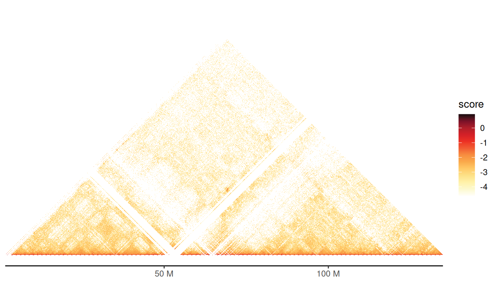
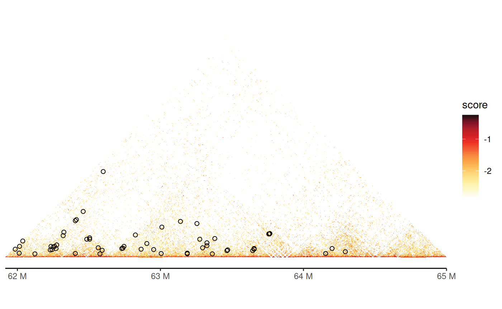
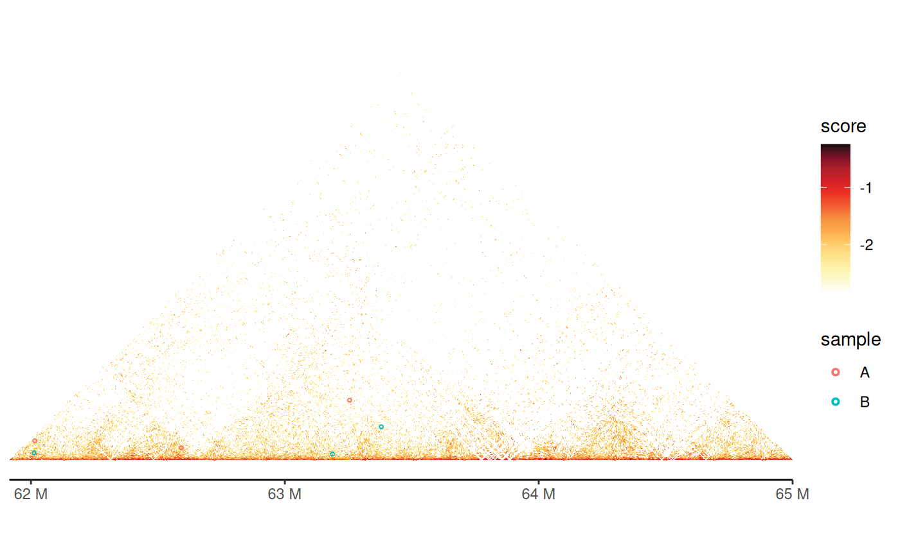

Introduction
gghic is a versatile R package for creating flexible, publication-ready visualizations of 3D genome organization data. With gghic, you can easily explore and present Hi-C contact maps, topologically associating domains (TADs), chromatin loops, gene annotations, and other genomic features in a unified and customizable framework.
Whether you are analyzing large-scale Hi-C experiments, visualizing multi-chromosome interactions, or integrating additional genomic tracks (such as ChIP-seq or BigWig data), gghic provides a tidyverse-friendly and extensible toolkit for your research.
This tutorial will guide you through the core features of gghic, from data preparation to advanced visualization. By the end, you’ll be able to generate high-quality, informative figures for your genomics projects with just a few lines of code.
Learn more: - arXiv preprint
Setup
Load Required Packages
load_pkg <- function(pkgs) {
for (pkg in pkgs) suppressMessages(require(pkg, character.only = TRUE))
}
load_pkg(
c(
"gghic", "ggplot2", "tibble", "scales", "dplyr", "tidyr", "glue",
"HiCExperiment", "GenomicRanges", "InteractionSet"
)
)Download Example data
Example data files are hosted at gghic-data to keep the package lightweight.
download_example_files <- function(cache_dir, check_exists = TRUE) {
if (!file.exists(cache_dir)) dir.create(cache_dir)
files <- list(
"chr4_11-100kb.cool" = "cooler/chr4_11-100kb.cool",
"chr4_11-5kb.cool" = "cooler/chr4_11-5kb.cool",
"track1.bigWig" = "bigwig/track1.bigWig",
"track2.bigWig" = "bigwig/track2.bigWig",
"gencode-chr4_11.gtf.gz" = "gtf/gencode-chr4_11.gtf.gz",
"TADs_500kb-chr4_11.tsv" = "tad/TADs_500kb-chr4_11.tsv",
"loops-chr4_11.txt" = "loop/loops-chr4_11.txt",
"gis_hic.rds" = "multiway/gis_hic.rds",
"concatemers.rds" = "multiway/concatemers.rds"
)
url_base <- paste0(
"https://raw.githubusercontent.com/",
"mhjiang97/gghic-data/refs/heads/master/"
)
for (file_name in names(files)) {
file_path <- file.path(cache_dir, file_name)
if (check_exists && file.exists(file_path)) next
download.file(
paste0(url_base, files[[file_name]]), file_path, method = "curl"
)
}
}
dir_cache <- "../data"
download_example_files(dir_cache)
path_cf_100 <- file.path(dir_cache, "chr4_11-100kb.cool")
path_cf_5 <- file.path(dir_cache, "chr4_11-5kb.cool")
path_gtf <- file.path(dir_cache, "gencode-chr4_11.gtf.gz")
paths_track <- file.path(dir_cache, glue::glue("track{1:2}.bigWig"))
path_tad <- file.path(dir_cache, "TADs_500kb-chr4_11.tsv")
path_loop <- file.path(dir_cache, "loops-chr4_11.txt")
path_gis_hic <- file.path(dir_cache, "gis_hic.rds")
path_concatemers <- file.path(dir_cache, "concatemers.rds")Data Preparation
Prepare Data for Visualisation
scale_data <- function(data, score_column = "balanced", scale_method = log10) {
if (inherits(data, "HiCExperiment")) {
gis <- InteractionSet::interactions(data)
} else if (inherits(data, "GInteractions")) {
gis <- data
} else {
stop("Input data must be a HiCExperiment or GInteractions object.")
}
x <- gis |>
tibble::as_tibble() |>
dplyr::mutate(score = scale_method(.data[[score_column]])) |>
dplyr::filter(!is.na(score), !is.infinite(score)) |>
dplyr::mutate(score = scales::oob_squish(score, c(min(score), max(score))))
x
}
x_100 <- scale_data(hic_100)
x_5 <- scale_data(hic_5)Visualisations
Hi-C Heatmap
geom_hic() is the main function to visualise Hi-C/-like
data. It requires the following aesthetics: seqnames1,
start1, end1, seqnames2,
start2, end2, and fill.
p <- x_100 |>
dplyr::filter(seqnames1 == "chr11", seqnames2 == "chr11") |>
tidyr::drop_na(score) |>
ggplot2::ggplot(
ggplot2::aes(
seqnames1 = seqnames1, start1 = start1, end1 = end1,
seqnames2 = seqnames2, start2 = start2, end2 = end2,
fill = score
)
) +
geom_hic()
ptheme_hic() is a theme function for
geom_hic() that enhances the appearance of the plot.
p + theme_hic()
gghic() is a wrapper function that can take either a
HiCExperiment object, a GenomicInteractions
object, or a tibble/data.frame as input.
(exactly the same as above).
hic_100["chr11"] |>
gghic()Ideogram
geom_ideogram() can be used to add chromosome ideograms
to the plot.
x_100 |>
dplyr::filter(seqnames1 == "chr11", seqnames2 == "chr11") |>
ggplot2::ggplot(
ggplot2::aes(
seqnames1 = seqnames1, start1 = start1, end1 = end1,
seqnames2 = seqnames2, start2 = start2, end2 = end2,
fill = score
)
) +
geom_hic() +
theme_hic() +
geom_ideogram(
genome = "hg19", highlight = FALSE, length_ratio = 0.7, fontsize = 8
)
#> Warning in getMethods(coerce, table = TRUE): 'getMethods' is deprecated.
#> Use 'getMethodsForDispatch(f, TRUE)' instead.
#> See help("Deprecated")
#> Warning in getMethods(coerce, table = TRUE): 'getMethods' is deprecated.
#> Use 'getMethodsForDispatch(f, TRUE)' instead.
#> See help("Deprecated")The wrapper function gghic() can also add ideograms to
the plot. (exactly the same as above).
hic_100["chr11"] |>
gghic(
ideogram = TRUE, genome = "hg19", highlight = FALSE, length_ratio = 0.7,
ideogram_fontsize = 8
)The plotted region can be highlighted on the ideogram by setting
highlight = TRUE.
hic_100["chr4:10000000-15000000"] |>
gghic(
ideogram = TRUE, genome = "hg19", highlight = TRUE, length_ratio = 0.7,
ideogram_fontsize = 8
)
Gene Annotation
Track-based gene annotation can be added to the plot by using
geom_annotation().
p <- x_5 |>
dplyr::filter(
seqnames1 == "chr11", seqnames2 == "chr11",
center1 > 67000000, center1 < 67100000,
center2 > 67000000, center2 < 67100000
) |>
ggplot2::ggplot(
ggplot2::aes(
seqnames1 = seqnames1, start1 = start1, end1 = end1,
seqnames2 = seqnames2, start2 = start2, end2 = end2,
fill = score
)
) +
geom_hic() +
theme_hic() +
geom_ideogram(
genome = "hg19", highlight = FALSE, length_ratio = 0.7, fontsize = 8
)
p + geom_annotation(gtf_path = path_gtf, style = "basic", maxgap = 100000)
#> Import genomic features from the file as a GRanges object ... OK
#> Prepare the 'metadata' data frame ... OK
#> Make the TxDb object ...
#> Warning in .get_cds_IDX(mcols0$type, mcols0$phase): The "phase" metadata column contains non-NA values for features of type
#> stop_codon. This information was ignored.
#> Warning in .makeTxDb_normarg_chrominfo(chrominfo): genome version information
#> is not available for this TxDb object
#> OK
#> Warning in .makeTxDb_normarg_chrominfo(chrominfo): genome version information
#> is not available for this TxDb objectSome parameters can be set for geom_annotation():
-
stylecan be set to"arrow"to change the annotation style. -
maxgapis used to calculate how many non-overlapping tracks are needed for the annotation. -
gene_symbolscan be used to specify genes to plot.
p + geom_annotation(
gtf_path = path_gtf, style = "arrow", maxgap = -1,
gene_symbols = c("GRK2", "SSH3", "KDM2A")
)
#> Warning in .makeTxDb_normarg_chrominfo(chrominfo): genome version information
#> is not available for this TxDb objectgghic() can also add gene annotation to the plot
(exactly the same as above).
Chromatin Loops
Chromatin loops can be visualised using geom_loop() or
geom_loop2(). The former requires a path to a loop file,
while the latter requires a tibble/data.frame
containing the loop data which enables easy customization by adding
additional aesthetics.
hic_5["chr11:61915000-65000000"] |>
gghic(loop = TRUE, loop_path = path_loop, loop_is_0based = TRUE)
df_loop <- path_loop |>
read.table(
sep = "\t",
col.names = c("seqnames1", "start1", "end1", "seqnames2", "start2", "end2")
) |>
dplyr::filter(
seqnames1 == "chr11", seqnames2 == "chr11",
start1 > 61925000, end1 < 67480000,
start2 > 61925000, end2 < 67480000
)
keep <- sample(nrow(df_loop), 6)
df_loop <- df_loop |>
dplyr::slice(keep) |>
dplyr::mutate(
sample = c(rep("A", 3), rep("B", 3))
)
hic_5["chr11:61915000-65000000"] |>
gghic() +
geom_loop2(
data = df_loop,
ggplot2::aes(
seqnames1 = seqnames1, start1 = start1, end1 = end1,
seqnames2 = seqnames2, start2 = start2, end2 = end2,
colour = sample
),
stroke = 1
)
TADs
Triangulers indicating TADs can be added using
geom_tad() or geom_tad2(). The former requires
a path to a TAD file, while the latter requires a
tibble/data.frame containing the TAD data.
x_100 |>
dplyr::filter(
seqnames1 == "chr4", seqnames2 == "chr4",
start1 > 50000000, end1 < 80000000,
start2 > 50000000, end2 < 80000000
) |>
gghic(
tad = TRUE, tad_is_0based = TRUE, tad_path = path_tad, tad_colour = "#00ff83"
)
df_tad <- path_tad |>
read.table(
sep = "\t", header = FALSE, col.names = c("seqnames", "start", "end")
) |>
dplyr::mutate(start = start + 1) |>
dplyr::filter(seqnames == "chr4", start > 60000000, end < 70000000) |>
dplyr::mutate(sample = c("A", "B"))
x_100 |>
dplyr::filter(
seqnames1 == "chr4", seqnames2 == "chr4",
start1 > 60000000, end1 < 70000000,
start2 > 60000000, end2 < 70000000
) |>
gghic() +
geom_tad2(
data = df_tad,
ggplot2::aes(
seqnames = seqnames, start = start, end = end,
colour = sample
),
stroke = 2
) +
ggplot2::scale_color_grey()Multi-way contacts
Multi-way contacts from concatemers obtained from Pore-C data can be
visualised using geom_concatemer() or
geom_concatemer2(). The former requires a path to a
concatemer file, while the latter requires a
tibble/data.frame containing the concatemer
data.
gis <- path_gis_hic |>
readRDS() |>
scale_data("balanced", log10)
names_read <- c(
"0c32bbce-24f8-4006-a75c-0e3504648971",
"10ae8263-cebc-4cbc-94c1-2c1dc5f22101",
"ced078ca-2d68-5217-a20e-7dc37dd2d786",
"06063b40-0271-4f4e-993d-2f202028b697",
"08bb8fe4-c54b-4a11-b9a0-c9eed2d18933"
)
df_concatemers <- path_concatemers |>
readRDS() |>
GenomicRanges::sort() |>
tibble::as_tibble() |>
dplyr::filter(read_name %in% names_read)
gghic(gis) +
geom_concatemer2(
data = df_concatemers,
ggplot2::aes(
seqnames = seqnames, start = start, end = end, read_group = read_name,
colour = read_name
),
check_concatemers = TRUE
) +
ggplot2::theme(
legend.key.size = ggplot2::unit(2, "mm"),
legend.text = ggplot2::element_text(size = 4)
)Visualisation of Interaction Data of Multiple Chromosomes
Set draw_boundary to TRUE to draw the
boundary of the chromosomes. Set expand_xaxis to
TRUE to expand the x-axis if the plot is crowded.
x_100 |>
gghic(
draw_boundary = TRUE,
expand_xaxis = TRUE, expand_left = 2000000, expand_right = 2000000
)Chromosome ideograms and gene tracks can also be added to the plot when visualising multiple chromosomes.
p <- x_5 |>
dplyr::filter(
center1 > 10000000 & center1 < 11000000 &
center2 > 10000000 & center2 < 11000000
) |>
gghic(
draw_boundary = TRUE,
ideogram = TRUE, genome = "hg19", highlight = TRUE, ideogram_fontsize = 7,
ideogram_width_ratio = 0.08,
annotation = TRUE, include_ncrna = FALSE, gtf_path = path_gtf,
style = "basic", maxgap = 100000, annotation_fontsize = 5,
annotation_width_ratio = 0.05,
expand_xaxis = TRUE
)
p
#> Warning in .makeTxDb_normarg_chrominfo(chrominfo): genome version information
#> is not available for this TxDb object
#> Warning in .makeTxDb_normarg_chrominfo(chrominfo): genome version information
#> is not available for this TxDb object
Other Data Tracks - geom_track
geom_track() can be used to add other data tracks to the
plot.
p + geom_track(
data_paths = paths_track, width_ratio = 0.3, data_range = "auto",
fill = c("#DC0000B2", "#00A087B2")
)
#> Warning in .makeTxDb_normarg_chrominfo(chrominfo): genome version information
#> is not available for this TxDb object
#> Warning in .makeTxDb_normarg_chrominfo(chrominfo): genome version information
#> is not available for this TxDb object
gghic() is handy for adding all these features to the
plot.
x_5 |>
dplyr::filter(
center1 > 10000000 & center1 < 11000000 &
center2 > 10000000 & center2 < 11000000
) |>
gghic(
draw_boundary = TRUE,
ideogram = TRUE, genome = "hg19", highlight = TRUE, ideogram_fontsize = 7,
ideogram_width_ratio = 0.08,
annotation = TRUE, include_ncrna = FALSE, gtf_path = path_gtf,
style = "arrow", maxgap = 100000, annotation_fontsize = 5,
annotation_width_ratio = 0.05,
track = TRUE, data_paths = paths_track, track_width_ratio = 0.5,
track_fill = c("#DC0000B2", "#00A087B2"), data_range = "maximum",
expand_xaxis = TRUE
)
#> Warning in .makeTxDb_normarg_chrominfo(chrominfo): genome version information
#> is not available for this TxDb object
#> Warning in .makeTxDb_normarg_chrominfo(chrominfo): genome version information
#> is not available for this TxDb objectSession Information
sessionInfo()
#> R version 4.5.0 (2025-04-11)
#> Platform: x86_64-pc-linux-gnu
#> Running under: Ubuntu 24.04.2 LTS
#>
#> Matrix products: default
#> BLAS: /usr/lib/x86_64-linux-gnu/openblas-pthread/libblas.so.3
#> LAPACK: /usr/lib/x86_64-linux-gnu/openblas-pthread/libopenblasp-r0.3.26.so; LAPACK version 3.12.0
#>
#> locale:
#> [1] LC_CTYPE=C.UTF-8 LC_NUMERIC=C LC_TIME=C.UTF-8
#> [4] LC_COLLATE=C.UTF-8 LC_MONETARY=C.UTF-8 LC_MESSAGES=C.UTF-8
#> [7] LC_PAPER=C.UTF-8 LC_NAME=C LC_ADDRESS=C
#> [10] LC_TELEPHONE=C LC_MEASUREMENT=C.UTF-8 LC_IDENTIFICATION=C
#>
#> time zone: UTC
#> tzcode source: system (glibc)
#>
#> attached base packages:
#> [1] stats4 stats graphics grDevices utils datasets methods
#> [8] base
#>
#> other attached packages:
#> [1] GenomicFeatures_1.60.0 AnnotationDbi_1.70.0
#> [3] InteractionSet_1.36.1 SummarizedExperiment_1.38.1
#> [5] Biobase_2.68.0 MatrixGenerics_1.20.0
#> [7] matrixStats_1.5.0 GenomicRanges_1.60.0
#> [9] GenomeInfoDb_1.44.0 IRanges_2.42.0
#> [11] S4Vectors_0.46.0 BiocGenerics_0.54.0
#> [13] generics_0.1.4 HiCExperiment_1.8.0
#> [15] glue_1.8.0 tidyr_1.3.1
#> [17] dplyr_1.1.4 scales_1.4.0
#> [19] tibble_3.2.1 ggplot2_3.5.2
#> [21] gghic_0.1.0
#>
#> loaded via a namespace (and not attached):
#> [1] strawr_0.0.92 RColorBrewer_1.1-3 rstudioapi_0.17.1
#> [4] jsonlite_2.0.0 magrittr_2.0.3 farver_2.1.2
#> [7] rmarkdown_2.29 fs_1.6.6 BiocIO_1.18.0
#> [10] ragg_1.4.0 vctrs_0.6.5 memoise_2.0.1
#> [13] Rsamtools_2.24.0 RCurl_1.98-1.17 base64enc_0.1-3
#> [16] htmltools_0.5.8.1 S4Arrays_1.8.0 progress_1.2.3
#> [19] curl_6.2.2 Rhdf5lib_1.30.0 rhdf5_2.52.0
#> [22] SparseArray_1.8.0 Formula_1.2-5 sass_0.4.10
#> [25] bslib_0.9.0 htmlwidgets_1.6.4 desc_1.4.3
#> [28] Gviz_1.52.0 httr2_1.1.2 cachem_1.1.0
#> [31] GenomicAlignments_1.44.0 lifecycle_1.0.4 pkgconfig_2.0.3
#> [34] Matrix_1.7-3 R6_2.6.1 fastmap_1.2.0
#> [37] GenomeInfoDbData_1.2.14 digest_0.6.37 colorspace_2.1-1
#> [40] rprojroot_2.0.4 textshaping_1.0.1 Hmisc_5.2-3
#> [43] RSQLite_2.3.11 labeling_0.4.3 filelock_1.0.3
#> [46] httr_1.4.7 abind_1.4-8 compiler_4.5.0
#> [49] here_1.0.1 withr_3.0.2 bit64_4.6.0-1
#> [52] htmlTable_2.4.3 backports_1.5.0 BiocParallel_1.42.0
#> [55] DBI_1.2.3 biomaRt_2.64.0 rappdirs_0.3.3
#> [58] DelayedArray_0.34.1 rjson_0.2.23 tools_4.5.0
#> [61] foreign_0.8-90 nnet_7.3-20 restfulr_0.0.15
#> [64] rhdf5filters_1.20.0 grid_4.5.0 checkmate_2.3.2
#> [67] cluster_2.1.8.1 gtable_0.3.6 BSgenome_1.76.0
#> [70] tzdb_0.5.0 ensembldb_2.32.0 data.table_1.17.2
#> [73] hms_1.1.3 xml2_1.3.8 XVector_0.48.0
#> [76] pillar_1.10.2 stringr_1.5.1 vroom_1.6.5
#> [79] BiocFileCache_2.16.0 lattice_0.22-6 rtracklayer_1.68.0
#> [82] bit_4.6.0 deldir_2.0-4 biovizBase_1.56.0
#> [85] tidyselect_1.2.1 Biostrings_2.76.0 knitr_1.50
#> [88] gridExtra_2.3 ProtGenerics_1.40.0 xfun_0.52
#> [91] stringi_1.8.7 UCSC.utils_1.4.0 lazyeval_0.2.2
#> [94] yaml_2.3.10 evaluate_1.0.3 codetools_0.2-20
#> [97] interp_1.1-6 cli_3.6.5 rpart_4.1.24
#> [100] reticulate_1.42.0 systemfonts_1.2.3 jquerylib_0.1.4
#> [103] dichromat_2.0-0.1 Rcpp_1.0.14 dbplyr_2.5.0
#> [106] png_0.1-8 XML_3.99-0.18 parallel_4.5.0
#> [109] pkgdown_2.1.2 blob_1.2.4 prettyunits_1.2.0
#> [112] latticeExtra_0.6-30 jpeg_0.1-11 AnnotationFilter_1.32.0
#> [115] bitops_1.0-9 txdbmaker_1.4.1 VariantAnnotation_1.54.1
#> [118] purrr_1.0.4 crayon_1.5.3 rlang_1.1.6
#> [121] KEGGREST_1.48.0